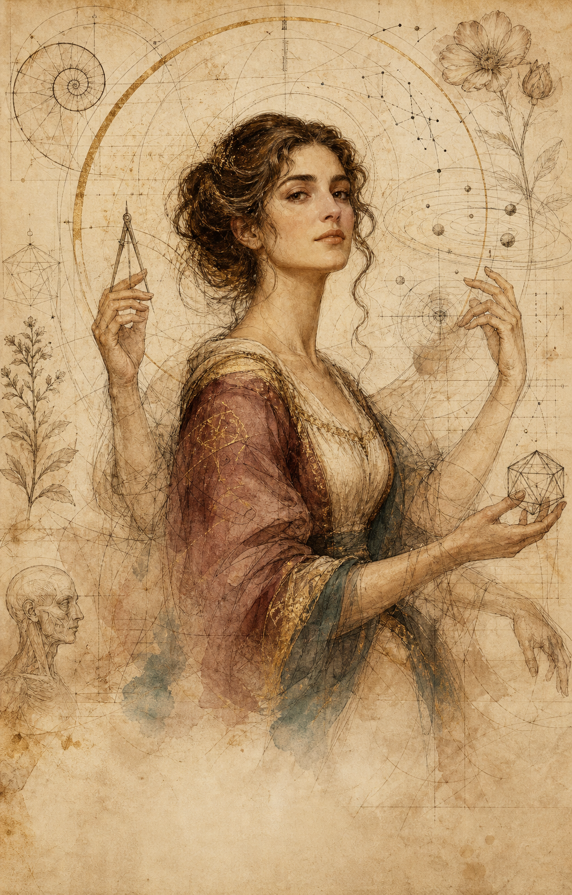

Je spoor kan een gezicht krijgen
Maak eerst een plek. Het beest mag later komen.
In een halve minuut krijgt je spoor een naam, interesses en een geometrische signatuur. Daarna kun je de 35 dierenvragen doen wanneer je daar werkelijk zin in hebt.
Waar was je gebleven?
Jouw spoor, zonder rapport.
Deze gegevens staan alleen op dit apparaat. Wat leeg is, blijft rustig uit beeld tot er werkelijk iets te tonen valt.
Wat je onderweg opende
Spiegels en proeven
Wat je wilde meenemen
Draden die je kunt oppakken
Twee geheime gangen
Waar wil je even rondneuzen?
Je hoeft niet te weten wat je zoekt. Kies alleen de wereld die vandaag iets meer trekt.


Er ligt nog iets open
Pak de draad weer op.
Nieuw in de Speelhal
Leg één emotioneel moment op de werkbank.
De emotionele routekaart maakt situatie, lichaam, mogelijke emotie, betekenis en impuls zichtbaar — zonder te doen alsof één invulling de waarheid is.
Open de nieuwste oefenbank →Jij houdt het spoor vast
Bewaar het, zet het terug of wis het.
Profiel, leesvoortgang, quizspiegels en routes blijven lokaal in deze browser. Er wordt niets naar de site gestuurd.
Bewaren of ciao
Vandaag onthouden. Morgen weer weg.
Zonder profiel bewaren we alleen wat je vandaag leest en speelt. Bij je eerste bezoek op een volgende dag verdwijnt die gastvoortgang automatisch. Wil je je volledige spoor houden? Maak dan je profiel.
Een profiel is een ingang, geen einduitspraak. Gebruik iedere spiegel als uitnodiging tot onderzoek, niet als diagnose of definitief oordeel.
Het profielatelierMaak mijn profiel aanNaam · signatuur · eigen spoor →